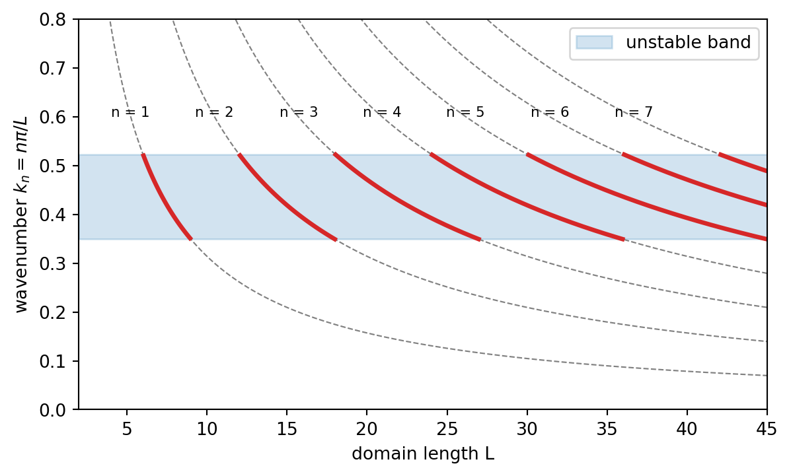

Domain Size and Mode Selection
Module 4: Space and Pattern Formation
NoteReading
- Compulsory: Britton (2003), Chapter 7, Sections 7.2 and 7.3 (pp. 206 to 214): spatial modes, temporal eigenvalues, the dispersion relation, and the domain size as bifurcation parameter.
- Recommended: Turing (1952), Sections 8 and 9: the number of lobes on a ring is obtained by dividing the circumference by the “chemical wave-length”.
- Technical background: Britton (2003), Appendix C, Sections C.3 to C.5 (eigenvalues of the Laplacian and separation of variables).
The Dispersion Relation page fixes \(\gamma\) and asks which Neumann modes fall into the unstable band. Britton turns the question around: the Turing conditions say that a band of unstable wavenumbers exists, but a finite domain only offers the discrete wavenumbers \(k_n\). Whether a given mode is unstable then depends on the size of the domain. Britton (2003, sec. 7.1) stresses that this is the relevant bifurcation parameter in development, because the embryo grows while the chemistry stays the same.
What the Source Says
- With the scaled equation \(u_t = \gamma^2 f(u) + D\nabla^2 u\) on a standard domain, increasing the scale factor \(\gamma\) is “equivalent to increasing domain size” (Britton 2003, sec. 7.2). (Britton’s \(\gamma^2\) is the \(\gamma\) of these notes, see Reaction-Diffusion Equations.)
- Define \(\rho(\lambda) = \max_i \operatorname{Re}\sigma_i(\lambda)\), where \(\lambda = k^2\) is a spatial eigenvalue. This function is what Britton calls the dispersion relation (Britton 2003, sec. 7.3). The steady state needs \(\rho(0) < 0\).
- On an infinite domain every \(\lambda \ge 0\) is allowed, so instability occurs as soon as some \(\lambda\) has \(\rho(\lambda) > 0\). On a finite domain the potential instability is realised only if the interval of unstable \(\lambda\) contains an eigenvalue \(\lambda_n\) (his Figure 7.3).
- The \(n\)th mode loses stability at a parameter value where \(a_2(\lambda_n) = 0\), with \(a_2\) the determinant of the mode matrix. Britton calls this the mode-\(n\) Turing bifurcation (Britton 2003, Equations 7.4.31 and 7.4.32).
- Close to such a bifurcation the linear theory predicts growth of a multiple of the mode \(F_n(x)\), and, under conditions he does not derive, the nonlinear solution tends to a steady state close to that multiple (Britton 2003, Example 7.1 and p. 214). If several modes are unstable, the one with the largest growth rate dominates while the linear approximation holds (Britton 2003, sec. 7.2).
The Bifurcation Values in Closed Form
Use the notation of the Turing Conditions page, with \(s = d f_u + g_v\) and \(\Delta = s^2 - 4d \det J\). The mode matrix of a mode with \(k^2 = \lambda\) has determinant
\[ h(\lambda) = d\lambda^2 - \gamma s \lambda + \gamma^2 \det J. \]
On the standard interval \((0, \pi)\) with Neumann conditions, \(\lambda_n = n^2\). Mode \(n\) is unstable when \(h(n^2) < 0\). Read as a quadratic inequality in \(\gamma\),
\[ \det J\,\gamma^2 - s\,n^2\gamma + d\,n^4 < 0 \quad\Longleftrightarrow\quad n^2\,\gamma_- < \gamma < n^2\,\gamma_+, \qquad \gamma_\pm = \frac{s \pm \sqrt{\Delta}}{2\det J}. \tag{1}\]
On a physical interval of length \(L\) with the original scaling, \(\gamma = 1\) and the substitution \(x = L\xi/\pi\) gives the standard interval with the effective value \(\gamma_{\mathrm{eff}} = (L/\pi)^2\). So mode \(n\) is unstable for
\[ \pi n \sqrt{\gamma_-} < L < \pi n \sqrt{\gamma_+}. \tag{2}\]
Two consequences follow without further computation.
- Each mode is unstable on an interval of \(\gamma\) (or of \(L\)), not only above a threshold. The intervals have the constant ratio \(\gamma_+/\gamma_-\) and slide to larger \(L\) in proportion to \(n\).
- Modes \(n\) and \(n+1\) are unstable together for some \(L\) exactly when \(\left((n+1)/n\right)^2 < \gamma_+/\gamma_-\). Otherwise there is a window of \(L\) in which neither is unstable, and the uniform state is stable even though the Turing conditions hold. As \(d \downarrow d_c\) the ratio \(\gamma_+/\gamma_-\) tends to \(1\) and the intervals shrink to points.
For Case A the constants are \(\gamma_- \approx 3.66\) and \(\gamma_+ \approx 8.20\), so \(\gamma_+/\gamma_- \approx 2.24\). Since \(2.24 < 4\) and \(2.24 < 9/4\), modes \(1\) and \(2\) never grow together and neither do modes \(2\) and \(3\), while \(2.24 > 16/9\) lets modes \(3\) and \(4\) overlap. This reproduces the lengths found on the Dispersion Relation page: mode \(1\) for \(6.01 < L < 8.99\), mode \(2\) for \(12.02 < L < 17.99\), mode \(3\) for \(18.03 < L < 26.98\).
Prediction Against Simulation
The linear theory predicts the first unstable mode. To see how much of it survives in the nonlinear model, integrate the 1D Gierer-Meinhardt system from the uniform state plus 1% noise for several lengths. The code uses zero-flux boundaries placed exactly at the ends of the domain (a ghost value equal to the edge value, so the length is \(N\,dx\)) and counts the sign changes of \(u - \bar u\). A pattern with \(n\) half-wavelengths, \(\cos(n\pi x/L)\), has \(n\) sign changes.
import numpy as np
from amlab.turing import dispersion_relation, gierer_meinhardt_jacobian, unstable_modes_1d
a, b, d = 0.40, 1.00, 30.0
u_star = (a + 1) / b
jac = gierer_meinhardt_jacobian(a, b)
def simulate(length, dx=1.0, t_end=400.0, seed=0):
n_pts = int(round(length / dx))
dt = 0.4 * dx**2 / (2 * d)
rng = np.random.default_rng(seed)
uv = np.array([[u_star], [u_star**2]]) * (1 + 0.01 * rng.standard_normal((2, n_pts)))
diff = np.array([[1.0], [d]])
for _ in range(int(round(t_end / dt))):
padded = np.concatenate([uv[:, :1], uv, uv[:, -1:]], axis=1)
lap = (padded[:, 2:] - 2 * uv + padded[:, :-2]) / dx**2
u, v = uv
uv = uv + dt * (diff * lap + np.array([a - b * u + u**2 / v, u**2 - v]))
return uv
def grid_mode(length, dx=1.0):
"""Leading unstable mode for the discrete operator with exact zero flux."""
n_pts = int(round(length / dx))
n = np.arange(n_pts)
k2 = 4 / dx**2 * np.sin(n * np.pi / (2 * n_pts)) ** 2
rates = dispersion_relation(k2, *jac, d)
return int(n[np.argmax(rates)]) if rates.max() > 0 else 0
print(" L continuum grid(dx=1) simulated")
for length in (4, 8, 10, 15, 22, 30, 40):
modes = unstable_modes_1d(d=d, length=length, num_modes=60)
lead = modes[0][0] if modes else 0
uv = simulate(length)
amplitude = np.ptp(uv[0])
signs = np.sign(uv[0] - uv[0].mean())
seen = int(np.sum(signs[1:] != signs[:-1])) if amplitude > 1e-3 else 0
print(f"{length:3d} {lead:9d} {grid_mode(length):10d} {seen:9d}") L continuum grid(dx=1) simulated
4 0 0 0
8 1 1 1
10 0 0 0
15 2 2 2
22 3 3 3
30 4 4 4
40 5 6 6The rows for \(L = 4\) and \(L = 10\) show \(0\) in all three columns: nothing grows and the flat state persists, in line with the gaps of Figure 1. The three columns also agree in every other row except \(L = 40\). There two modes have almost the same growth rate (about \(0.0214\) for \(n = 5\) and \(0.0206\) for \(n = 6\)), and the answer depends on the grid. On the grid with \(dx = 1\) the discrete operator has \(\lambda_n = (4/dx^2)\sin^2(n\pi/2N)\) instead of \((n\pi/L)^2\), which shifts the preferred mode from \(5\) to \(6\), and the simulation follows the discrete prediction. With \(dx = 0.5\) and four different noise seeds the simulation gave \(5, 6, 5, 5\) half-wavelengths. When two modes are this close, the noise and the discretisation decide, and linear theory is only informative to within one mode. This is the same caveat as for the 2D case on Unstable Modes in 2D.
NoteExercise
Show that the intervals of modes \(n\) and \(n+1\) overlap exactly when \(\left((n+1)/n\right)^2 < \gamma_+/\gamma_-\), and find the smallest \(d\) for which modes \(1\) and \(2\) can be unstable together for Gierer-Meinhardt with \(a = 0.4\), \(b = 1\).
TipSolution
The intervals \((n^2\gamma_-, n^2\gamma_+)\) and \(((n+1)^2\gamma_-, (n+1)^2\gamma_+)\) overlap when the lower end of the second is below the upper end of the first, \((n+1)^2\gamma_- < n^2\gamma_+\). Dividing by \(n^2\gamma_-\) gives the condition.
For \(n = 1\) we need \(\gamma_+/\gamma_- > 4\), that is \((s + \sqrt\Delta)/(s - \sqrt\Delta) > 4\), which is equivalent to \(\sqrt\Delta > 3s/5\). Squaring, \(s^2 - 4d\det J > 9s^2/25\), so \(16 s^2/25 > 4 d \det J\). With \(b = 1\) (\(\det J = 1\)) and \(s = d f_u - 1\), \(f_u = 3/7\), solve \(4(3d/7 - 1)^2 = 25 d\).
import numpy as np
from amlab.turing import gierer_meinhardt_jacobian
fu, fv, gu, gv = gierer_meinhardt_jacobian(0.4, 1.0)
det = fu * gv - fv * gu
d = np.linspace(27, 200, 200000)
s = d * fu + gv
ratio = (s + np.sqrt(s**2 - 4 * d * det)) / (s - np.sqrt(s**2 - 4 * d * det))
print(d[np.argmax(ratio > 4)])Writing \(t = \sqrt d\), the condition is \(\tfrac{3}{7}t^2 - \tfrac{5}{2}t - 1 = 0\) at the threshold, so \(t = (5/2 + \sqrt{25/4 + 12/7})/(6/7) \approx 6.209\) and \(d \approx 38.55\), which the code confirms. Modes \(1\) and \(2\) can therefore coexist only for \(d > 38.55\).
References
Britton, Nicholas F. 2003. Essential Mathematical Biology. Springer Undergraduate Mathematics Series. Springer. https://doi.org/10.1007/978-1-4471-0049-2.
Turing, Alan M. 1952. “The Chemical Basis of Morphogenesis.” Philosophical Transactions of the Royal Society B 237 (641): 37–72. https://doi.org/10.1098/rstb.1952.0012.